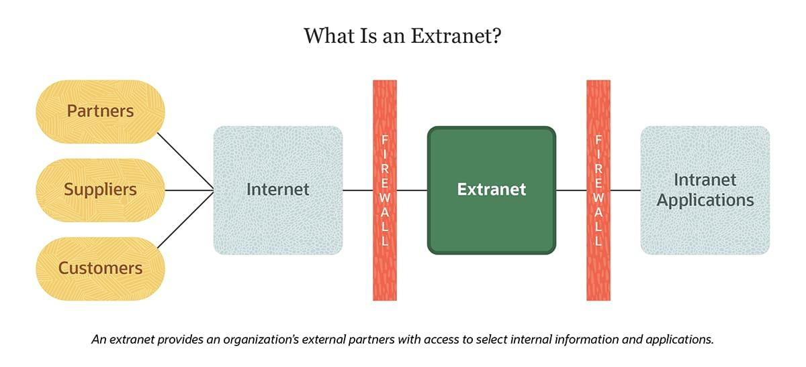

Extranet

An extranet is a controlled private network that allows external users such as business partners, suppliers, or customers to access certain parts of an organization’s internal systems securely.
It extends the functionality of an intranet by allowing limited access to authorized outsiders while still maintaining security and privacy.
Extranets are commonly used for business collaboration, supply chain management, and sharing sensitive information between organizations.